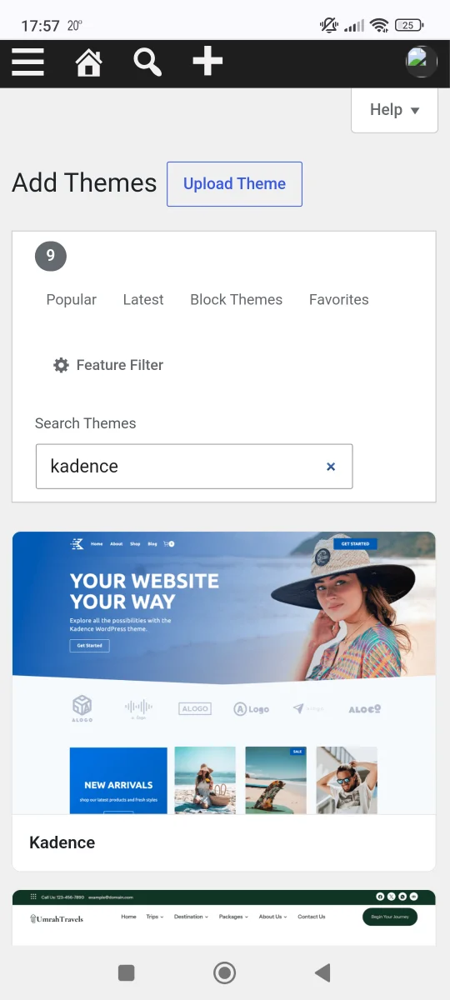
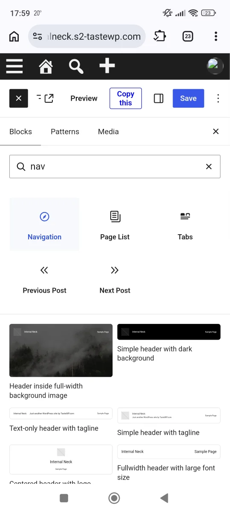
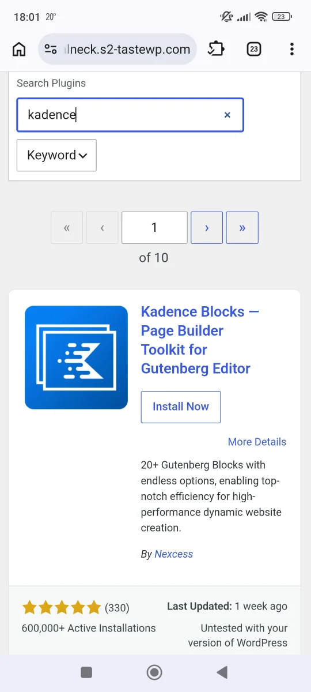

Website navigation is usually the first thing we encounter, given the fact that it's on the very top of every webpage. Besides, we're all used to checking the navigation to see what's available on a website. Makes sense to optimize this section of your small business website first. Here's how:
<- Keep it simple - limit the menu items to the most important webpages. Otherwise you risk overwhelming the users of your small business website. Everything else can be placed somewhere else on the page (for example in the footer section).
- Make it intuitive - use clear (self-explanatory) labels, and don't be misleading. First and last items in a list are usually most memorable to people, so use it to your advantage.
- Check if the menu behaves as expected, especially on smaller screens. Keep in mind that the web browsing on mobile devices is ever increasing.
In most use cases I recommend using a sticky header section, since it makes the navigation easily accessible even when scrolling webpages with longer content.
If you're using WordPress for your small business website, you can use one of the many (free) plugins to make a sticky header. But since I prefer using Kadence theme, you can set it up in through the theme customizer. You can check that WordPress theme here:
https://wordpress.org/themes/kadence/ [Check the image below]

The default navigation block in WordPress is a good starting point to build out your website navigation. It makes the vertical menu transform into drop-down menu on smaller screens. [Check the image below]

But the features are basic, so if you need something more advanced, I recommend using a free plugin - Kadence Blocks (complementary to Kadence theme, but can be used separately). Check out the plugin features here:
https://wordpress.org/plugins/kadence-blocks/ [Check the image below]

Among other things, this plugin enables you to make templates for your navigation, that can consist out of other blocks. This allows you to add advanced functionality like website search.